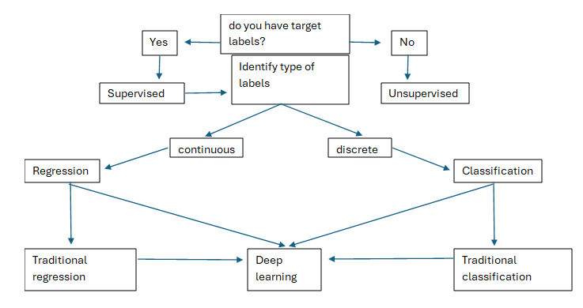
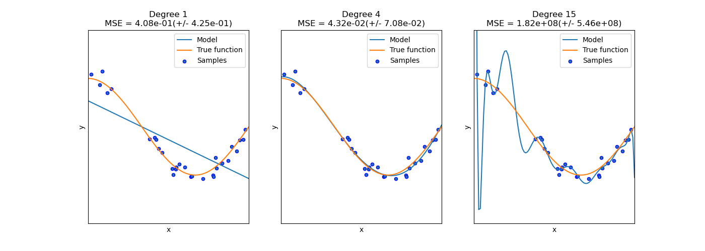
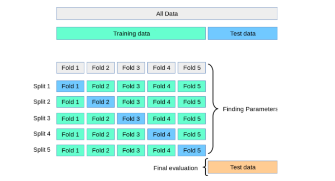
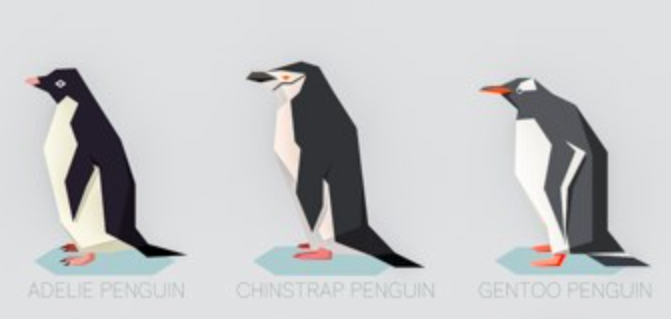
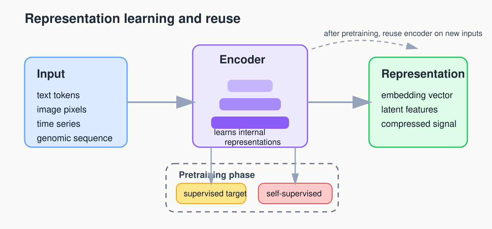
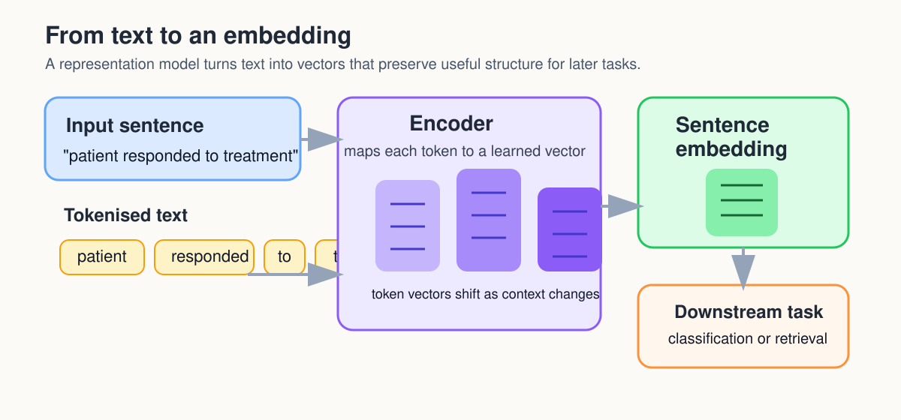
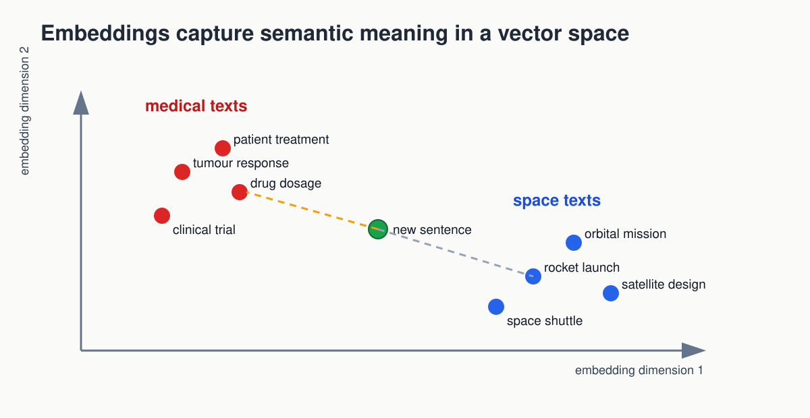
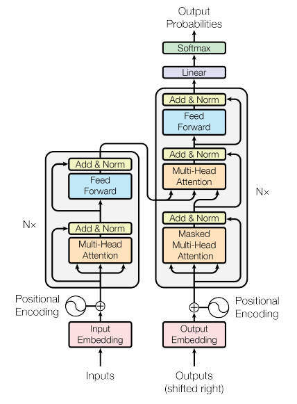
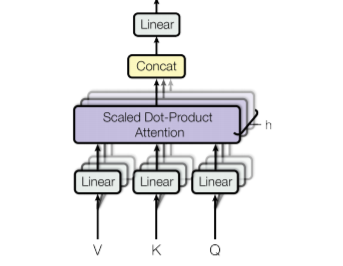

Choosing Your First Conventional ML Baseline
Figure 1

Figure 2

Key
points: The model represents the outcome as a weighted sum of
the input variables. Learning means adjusting those weights to minimize
prediction error on a continuous target.
Figure 3

Key
points: The model uses a weighted combination of the inputs and
then applies a logistic function to turn that score into a class
probability. Learning means adjusting the weights so the predicted
probabilities better match the observed labels, usually by minimizing
cross-entropy loss; it can be viewed as a neural network with no hidden
layer.
Figure 4

Key
points: A decision tree represents the model as a sequence of
if-then splits. Learning means choosing splits that make the resulting
groups purer for classification or more consistent for regression.
Figure 5

Key
points: k-nearest neighbours predicts from the nearest training
cases, where “nearest” is defined by a distance measure in the feature
space. For classification, it takes a majority vote across the
k neighbours; for regression, it can take their
average.
Figure 6

Key
points: K-Means represents each cluster by a centre point.
Learning means repeatedly assigning cases to the nearest centre and
updating the centres until the grouping stabilizes.
Figure 7

Key
points: The model treats features as separate pieces of
evidence and combines them probabilistically for each class. Learning
mostly means estimating how often features appear within each class from
the training data.
Figure 8

Key
points: A support vector machine makes its decision using a
small set of key training cases called support vectors, rather than all
training points or the nearest neighbours. With a kernel function, it
can measure similarity between a new case and those support vectors in a
transformed feature space, which is why SVMs are often useful for
small-sample, high-dimensional problems, although fitting can become
slow because the optimization often involves a large kernel matrix.
Figure 9

Key
points: XGBoost represents the model as a sequence of small
trees added one after another. Learning means each new tree focuses on
the mistakes or residual patterns left by the earlier trees.
Building and Improving a Baseline Model
Figure 1

Figure 2

(Image from scikit-learn documentation: https://scikit-learn.org/stable/auto_examples/model_selection/plot_underfitting_overfitting.html)Figure 3

Figure 4

Checking What Your Model Learned
Figure 1

Figure 2

Figure 3

Figure 4

Feature Engineering for Real Problems
Figure 1
Figure 2

Figure 3

Figure 4

Neural Networks and Deep Learning
Figure 1
 (cite:https://muneebsa.medium.com/deep-learning-101-lesson-7-perceptron-f6a698d81be8)
(cite:https://muneebsa.medium.com/deep-learning-101-lesson-7-perceptron-f6a698d81be8)
Figure 2

Figure 3
 (cite:https://machinelearninggeek.com/multi-layer-perceptron-neural-network-using-python/)
(cite:https://machinelearninggeek.com/multi-layer-perceptron-neural-network-using-python/)
Figure 4

Figure 5
Figure 6

Figure 7

Figure 8

Feature Learning and Transfer Learning
Figure 1

Figure 2

Figure 3

Transformers
Figure 1

Figure 2
